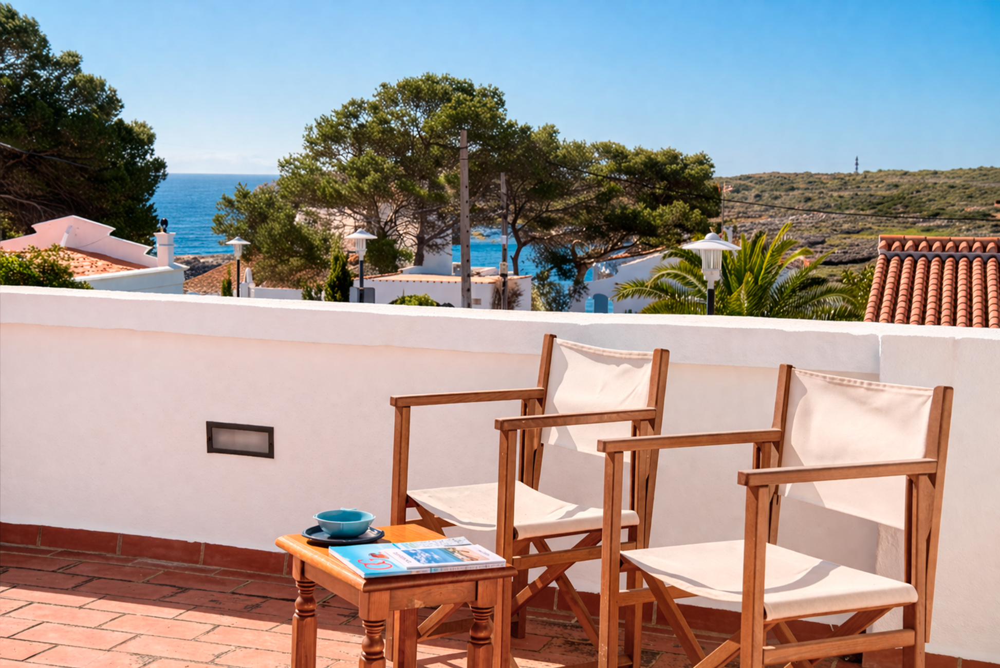

€995.000
Alcaufar, Sant Lluís, Menorca
Character first: 1930 Menorcan fabric, terraces, private pool and BBQ, sea/lake view. Old mixed with liveable now — not sleek-only contemporary.
Opened 30 Aug 2026. Offer.price €995000. 3/2 / ~150 m² / ~378 m² / year 1930. Features: balcony, garden, patio, sea view, swimming pool, terrace, furnished. Condition good. Different house from board ses-alcaufar-5501 (Ses Moreres 5501, 115 m², same €995k band) — do not treat as syndicate twin without a visit. i18n watchlist text ignored.